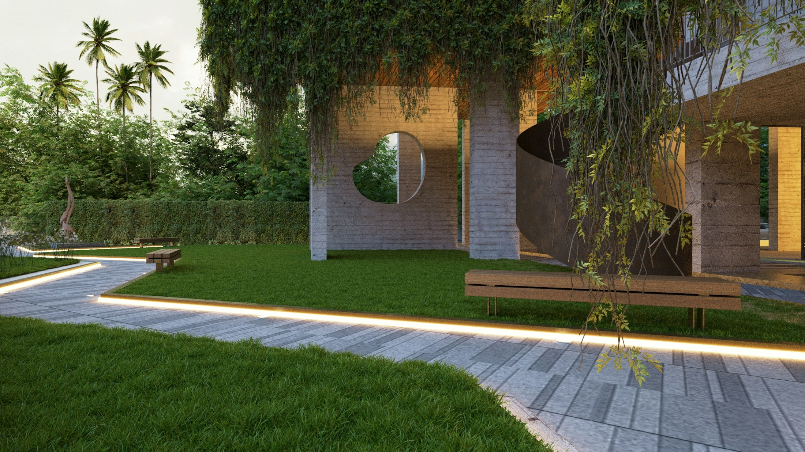

Arquitectura contemporánea · Misiones
Arquitectura que
pertenece al paisaje.
Diseñamos espacios contemporáneos donde la materia, la luz y el territorio construyen una forma de habitar más consciente.
Posadas · Misiones · Argentina
No imponemos formas.
Revelamos posibilidades.
Tierra Roja Arquitectura es un estudio dedicado a proyectar espacios que dialogan con quienes los habitan y con el lugar donde nacen.
Cada obra busca encontrar equilibrio entre identidad, funcionalidad y permanencia. Diseñamos con precisión, pero también con escucha: del clima, de la materia y de la vida que sucederá dentro.
Viviendas de autor · Desarrollos residenciales · Reformas · Hospitalidad
Obras que empiezan
en el territorio.
Tres escenarios conceptuales que expresan nuestra manera de relacionar paisaje, materia y escala cotidiana.
Diseñar desde
lo esencial.
La arquitectura aparece cuando las decisiones responden al lugar, a la materia y a las personas con la misma claridad.
Territorio
Cada proyecto parte de su clima, orientación, vegetación, materialidad y contexto.
Materia
Elegimos materiales que envejecen bien, se sienten reales y sostienen la identidad de la obra.
Experiencia
Pensamos la arquitectura desde el recorrido, la luz, la escala y la vida cotidiana.

como materia.Estudio de recorrido · 2026
Una idea se vuelve
espacio.
Un proceso claro, cercano y meticuloso para transformar una intención inicial en un espacio posible.
- 01
Escuchamos
Entendemos necesidades, deseos y modos de habitar.
- 02
Interpretamos
Leemos el sitio, el clima, los límites y las oportunidades.
- 03
Proyectamos
Construimos una respuesta precisa, sensible y realizable.
- 04
Acompañamos
Cuidamos cada decisión hasta que la obra encuentra su forma.
Toda obra comienza
con una conversación.
Contanos qué imaginás. Podemos encontrar la forma de llevarlo al espacio.
Hablar por WhatsApp ↗